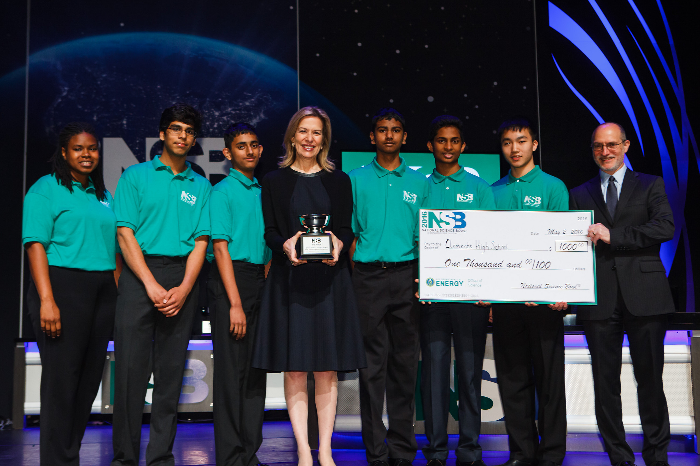
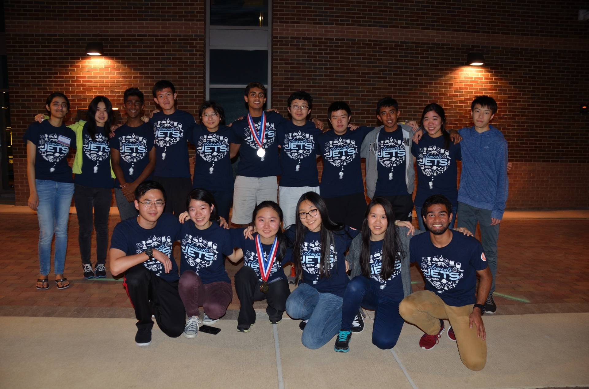
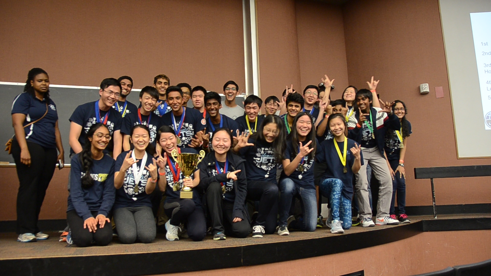
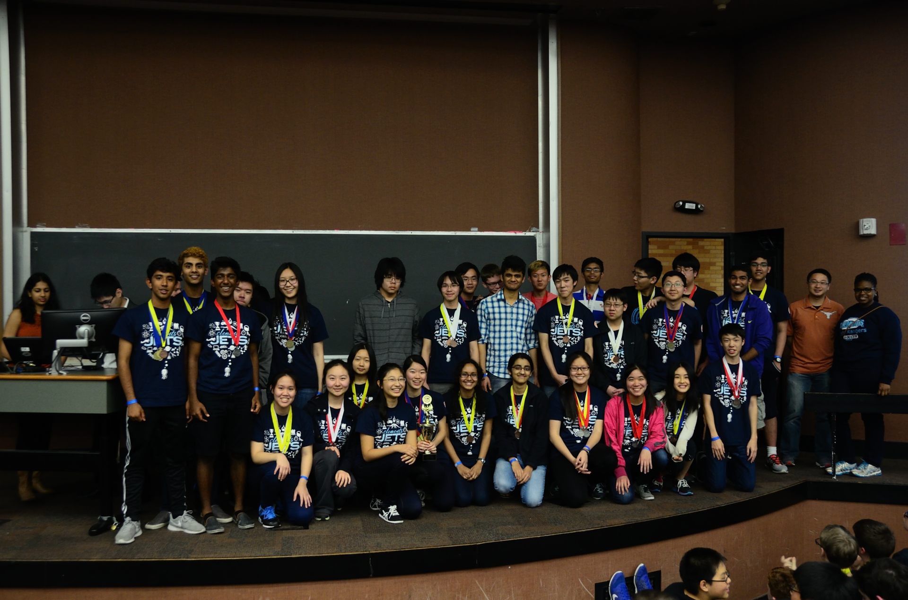

UPDATES
Science Bowl Nationals Results
May 1, 2016
Congratulations to our Science Bowl team of Rafay Ashary, Sameer Rajesh, Akash Karanam, Abhijith Venkat, and Archer Wang for getting 3rd place at the NATIONAL Science Bowl! Incredible finish for Clements' first year and looking forward to the next 3 years of dominance! Also, congratulations to Fort Settlement on a 4th place finish in the middle school tournament!
Science Olympiad State Results
April 23, 2016
This past weekend, Clements JETS placed 3rd overall at the Science Olympiad state competition at A&M University. The team missed a trip to nationals by one team placing. While the outcome of this competition was not in our favor, we want to express our gratitude to everyone who encouraged and supported the team's endeavors in this one Roller Coaster of a journey. Lastly, we would like to congratulate LASA and Seven Lakes for an outstanding performance at state.
UT Invitational Results
April 2, 2016
This past weekend, Clements JETS took home many medals and 1st place overall at the UT Austin Science Olympiad Invitational. Please congratulate the two teams that competed! Three more weeks until State!
UT Regional Results
February 6, 2016
This weekend, Clements R2-D2 and Clements C-3PO competed in the UT-Austin Regional competition and took home numerous medals and the second place trophy. They missed first place (Seven Lakes HS) by a small margin of 8 points. Because of their fantastic finish, Clements will be advancing to the state competition at Texas A&M on April 22-23, 2016. Please congratulate the two teams for their hard work, dedication, and tapioca struggles!
MIT Invitational Results
January 23, 2016This past weekend, Clements competed at the MIT Science Olympiad Invitational in Cambridge, Massachusetts. Out of the 68 teams that attended, Clements surpassed all expectations and placed 6th place overall! Congratulations to the team as well as the teammates who placed individually.